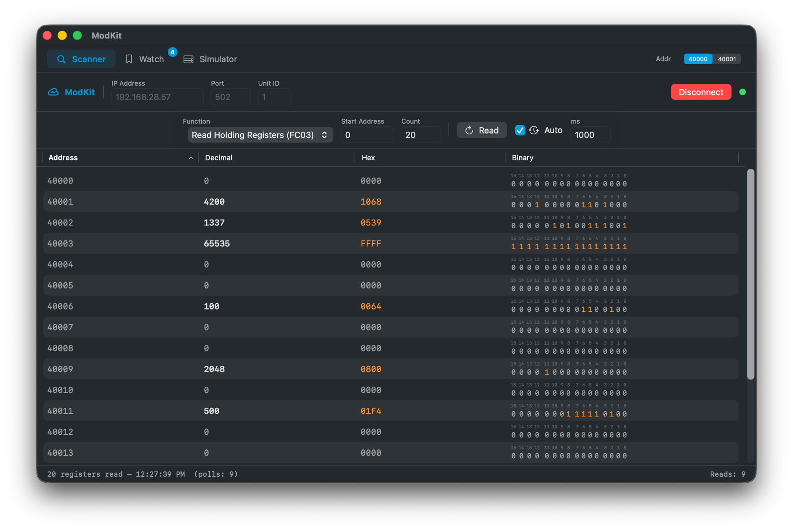
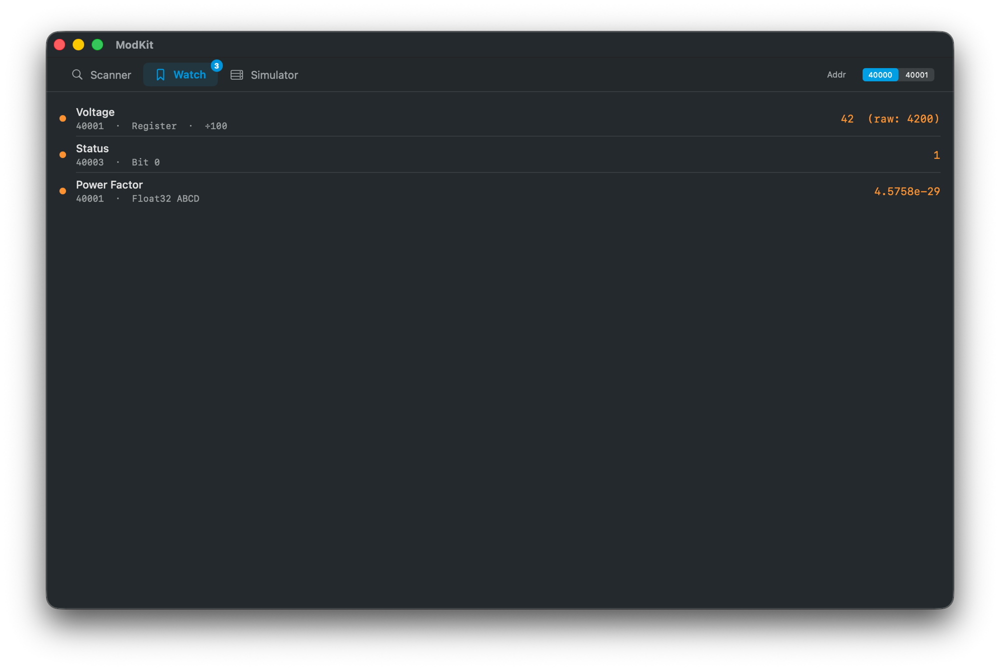

A lightweight Modbus TCP toolkit built for macOS. Scan registers, monitor named tags, simulate devices — all without Electron or dependencies.

Built different
ModKit is purpose-built for engineers working with real Modbus hardware. No browser wrapper, no runtime — just Swift and Network.framework.
Scanner
Connect to any Modbus TCP device and scan a register range with a single click. Auto-poll keeps values fresh at your chosen interval.

Watch
Right-click any register to add it to Watch with a custom name. Set a scale divisor and monitor it in engineering units — no mental math needed.
User Guide
Step-by-step reference for every feature. Click a section to expand.
Connect to a device and read/write registers in real time
Enter the IP address, port (default 502), and Unit ID of your Modbus TCP device, then click Connect. A connection timeout of 8 seconds applies.
Select the Function Code — FC03 reads Holding Registers, FC04 reads Input Registers, FC01/02 read Coils and Discrete Inputs. Set a Start Address (0-based protocol address) and a Count (number of points).
Click Read or press ⌘ R to poll once. Enable Auto to poll continuously at a configurable interval (milliseconds).
Each row shows the register value in decimal, hex, and a binary bit grid with bit positions 15 → 0 highlighted in real time. Useful for status words where each bit has a different meaning.
Double-click any row or right-click → Write Register to open the write panel. Enter a decimal or hex value and click Write (FC06). The register is re-read immediately after.
Right-click any register → Add to Watch… to pin it to the Watch tab with a custom name, type, and scale.
Monitor named tags with scale factors and Float32 decoding
In the Scanner tab, right-click any register → Add to Watch…. A sheet opens where you configure the watch before adding it.
Register — monitors the full 16-bit value (0–65535) with an optional scale divisor.
Bit — monitors a single bit (0–15) of the register. The sheet shows the current value of each bit in real time so you can pick the right one.
Float32 — reads two consecutive registers and decodes them as an IEEE 754 single-precision float. Choose the word order: AB CD (high word at address, low word at address+1) or CD AB (reversed). Check your device manual for the correct order.
For Register type, set a ÷ divisor to convert raw integer values to engineering units. Use presets ÷10, ÷100, ÷1000, or type any custom value. The preview line shows the result in real time.
Gray — no data yet (device not polled or register out of scan range).
Orange — active (non-zero value or bit = 1).
Green — present but zero.
Right-click any watch → Edit Watch… to change its name, type, word order, or scale without removing and re-adding it. Right-click → Remove Watch to delete.
All watches are saved automatically and restored on next launch. The badge on the Watch tab shows how many watches are configured.
Turn your Mac into a Modbus TCP slave with 2,000 registers
Enter a port and click Start Server. The server binds to 0.0.0.0 and accepts connections from any client on the network.
The grid shows 50 registers per page. Use ← Prev / Next → to move between pages, or type an address in the Go to field and press Enter — the grid will start exactly at that register.
Click any cell to open the edit panel. You can enter the value as decimal, hex, or toggle individual bits. Changes take effect immediately — any connected client will read the new value on the next poll.
The simulator responds to FC03 (Read Holding Registers), FC06 (Write Single Register), and FC10 (Write Multiple Registers). Other function codes return exception 0x01.
While running, the stats bar shows the bound address, last connected client IP, total read/write counts, and server uptime. Use Reset All to zero all 2,000 registers at once.
Match ModKit's display to your SCADA addressing convention
Modbus protocol addresses are 0-based. But SCADA systems disagree on how to display them:
40001-based (IEC standard, default): register 0 is displayed as 40001. Used by most PLCs and documentation.
40000-based: register 0 is displayed as 40000. Used by some SCADA platforms (e.g. Power Operation / CitectSCADA).
The Addr toggle is visible in the top-right of the tab bar. Switch between 40000 and 40001 — the change applies instantly to all tabs (Scanner, Watch, Simulator). The preference is saved between sessions.
The toggle only changes what is displayed. The underlying Modbus protocol address sent over TCP does not change — you are always reading and writing the same physical register.
Get started
ModKit is ad-hoc signed — no App Store, no notarization fees. macOS will ask you to confirm on first launch.
Grab the latest .zip from the GitHub Releases page.
Unzip and drag ModKit.app to your /Applications folder.
First launch: go to System Settings → Privacy & Security and click Open Anyway.